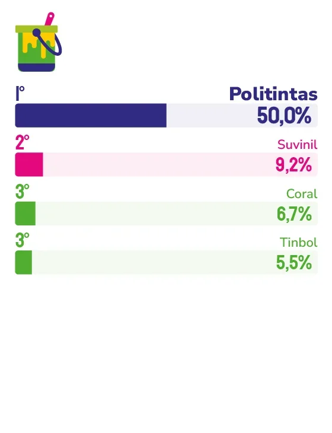

LOJA DE TINTAS
POLITINTAS
Com 51 anos de história, a Politintas transformou atendimento especializado, presença digital e responsabilidade com o Espírito Santo em algo raro no varejo: uma marca que metade do mercado cita espontaneamente, sem hesitar.
Cinquenta e um anos atrás, a Politintas começou a pintar sua história no Espírito Santo. Hoje, quando o capixaba pensa em tinta, metade do mercado diz o mesmo nome, sem que ninguém precise sugerir. Esse número, expressivo em qualquer segmento, revela algo que o presidente do Grupo Politintas, Vinícius Ventorim, define com precisão. “Ser lembrada de forma tão consistente demonstra que a marca conseguiu atravessar gerações, mantendo-se relevante para quem construiu, reformou e realizou sonhos no passado e também para quem está começando essa jornada hoje.”
Para Ventorim, a lembrança espontânea não nasce de campanhas isoladas, mas é construída diariamente, experiência por experiência. “Quando o consumidor pensa em tintas, acreditamos que ele associa a Politintas à segurança de encontrar a solução certa, com orientação técnica e atendimento de qualidade. Não é apenas uma lembrança comercial. É uma relação construída por milhares de experiências positivas acumuladas ao longo do tempo.”
No centro dessa experiência está uma escolha que a empresa fez cedo e nunca abandonou: investir em pessoas. Os profissionais da Politintas não são treinados para vender, são formados para atuar como consultores especialistas. “Produzimos conteúdos educativos, oferecemos suporte técnico e procuramos simplificar decisões que muitas vezes geram insegurança para quem está reformando ou construindo”, explica o presidente. Essa orientação humanizada, disponível nas lojas físicas, no WhatsApp, no televendas e nos canais digitais, é o que o concorrente não consegue replicar com facilidade, ou seja, não é tecnologia, é cultura interna.
Nos últimos anos, a empresa avançou também na integração entre o físico e o digital, combinando a experiência das lojas com a agilidade dos canais on-line. Mas foi a ampliação do papel social da marca que Ventorim destaca como um dos movimentos mais decisivos. “Iniciativas ligadas à arte urbana, educação, sustentabilidade e valorização da cultura capixaba reforçaram a percepção da Politintas como uma empresa próxima da comunidade e comprometida com o desenvolvimento do estado.” Para os próximos anos, esse caminho continua: logística reversa, uso de energia renovável e apoio a projetos culturais e sociais integram a agenda de 2026 e 2027, junto com expansão, tecnologia e qualificação profissional.
O consumidor capixaba, observa Ventorim, está mais exigente e mais conectado. Ele quer praticidade e experiências personalizadas, mas não abre mão da confiança. “Também observamos uma valorização crescente de marcas que possuem propósito e impacto positivo na sociedade, algo que faz parte da estratégia da Politintas.” É uma tendência que a empresa não precisou correr para acompanhar, afinal, já estava nesse caminho há muito tempo.
Sobre o que vem a seguir, o presidente é claro: daqui a 15 anos, em 2041, a Politintas estará completando 66 anos de história. Para chegar lá como marca ícone, a tecnologia vai evoluir, os canais vão mudar, as expectativas dos clientes vão se transformar. Mas existe uma linha que não se apaga. “O atendimento humano, o compromisso com a qualidade, a valorização das pessoas e a conexão genuína com os capixabas são pilares que fizeram a marca chegar até aqui e que continuarão sendo fundamentais para os próximos 15, 50 ou 100 anos.”

Vinícius Ventorim
Presidente do Grupo Politintas
“Acreditamos que marcas fortes não se constroem apenas vendendo produtos, mas participando ativamente da vida das pessoas. Cultivamos uma relação genuína com o Espírito Santo através do apoio ao esporte, à cultura e a projetos sociais que transformam comunidades.”
120
